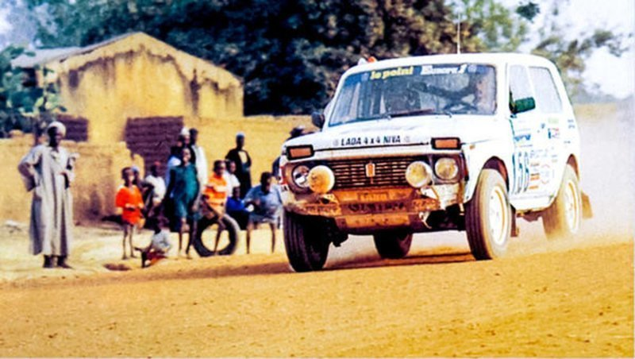
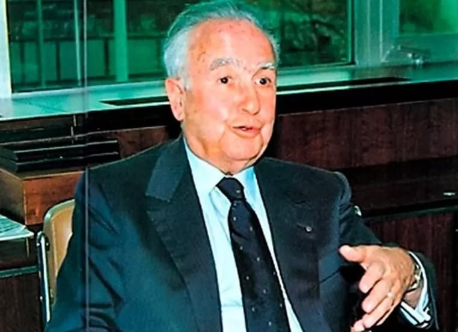
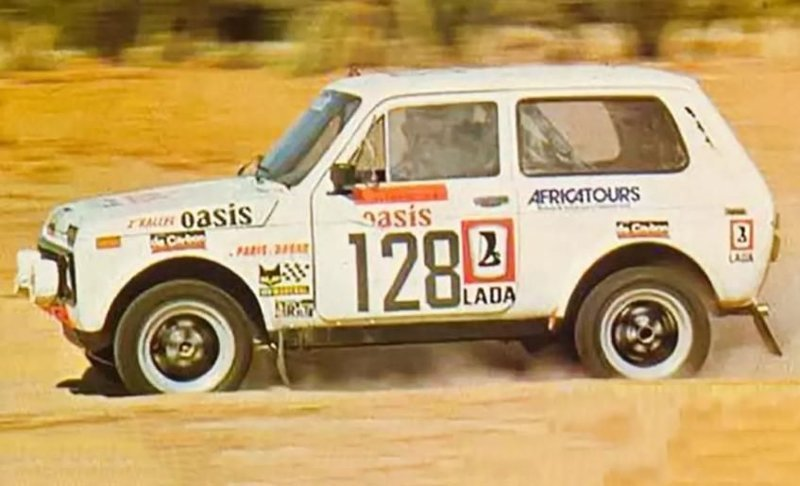
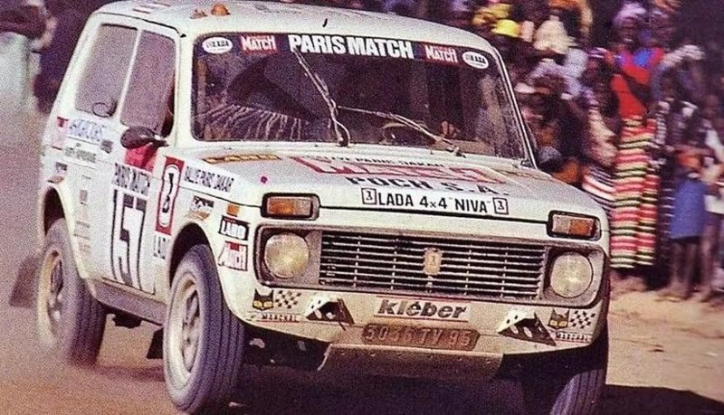
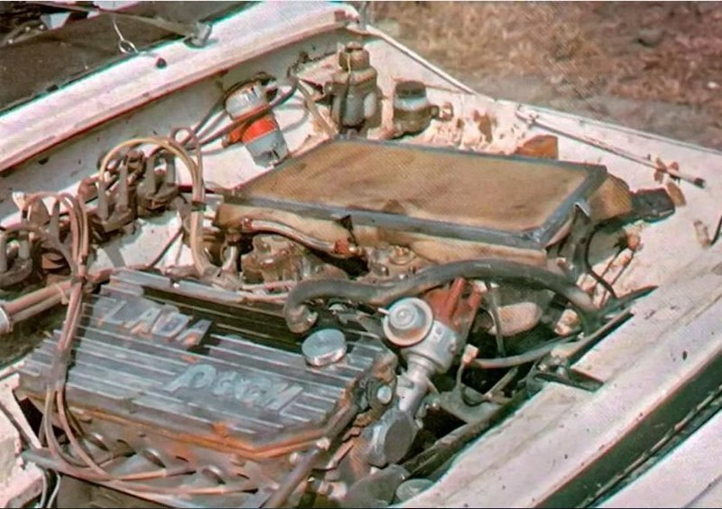
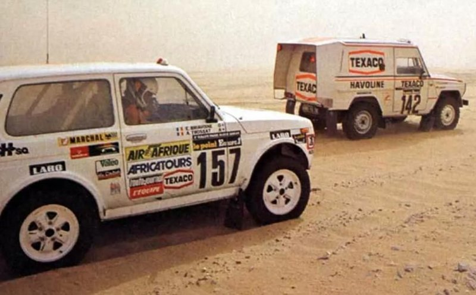
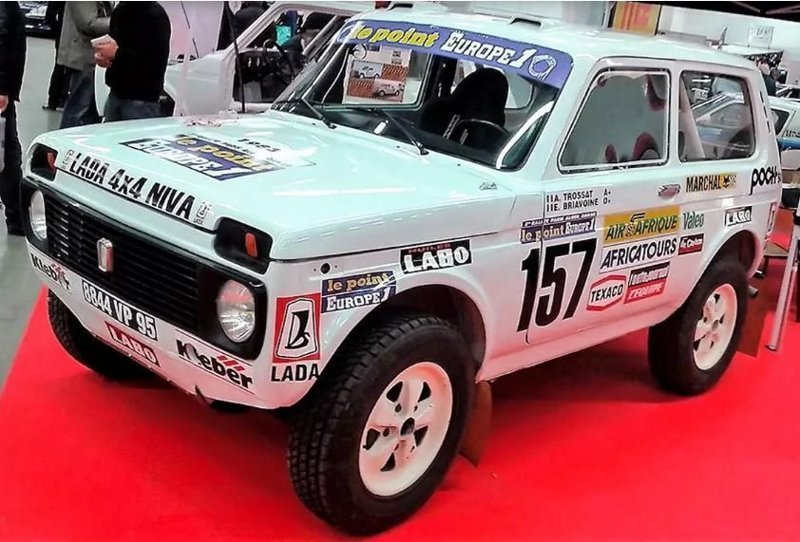

Как советская "Нива" выступала в легендарном ралли "Дакар"
В Европе к ВАЗ-2121 относились с трепетом и любовью. Еще бы, полноценный внедорожник стоил как банальная легковушка. Поэтому, когда Тьерри Сабин организовал первое в истории ралли "Париж-Алжир-Дакар", в гонке приняло участие сразу несколько экипажей на "Нивах". Причем пилоты-французы ехали сами по себе, они не представляли ни Францию, ни Советский Союз.
Изначально в ВАЗ-2121 никто не верил. Ведь конкуренцию им составили более подготовленные автомобили.
Предприимчивый Жак Пок
Француз Жак Пок продавал во Франции Skoda и "Москвич". А с 1972 года его ассортимент пополнили "Лады". Казалось бы, обычный торговец, который не представлял собой ничего интересного. Возможно, так бы оно и было, если бы не одно "но". Пок являлся настоящим фанатом автомобильных гонок. Причем выступал он не в роли зрителя, а участника.
Француз знал и умел продвигать свой товар. Он понимал, что лучшая реклама машины – ее достойное выступление в каком-нибудь известном соревновании. Особенно в этом нуждалась продукция соцлагеря, поскольку в Европе к ней относились весьма настороженно. И первым изменить отношение сумел Москвич-412. После успешных выступлений в марафонских ралли "Лондон-Сидней" и "Лондон-Мехико" советский автомобиль начал продаваться ударными темпами, что сильно повлияло на финансовое благополучие компании Пока. Когда появилась "Нива", француз быстро понял, что на этом автомобиле можно сорвать куш. Стоил он по европейским меркам недорого, при этом имея в арсенале постоянный полный привод, блокировку межосевого дифференциала и "понижайку". По сути, "Нива" являлась полноценным внедорожником, которую продавали по цене обычной легковушки. Появление "Нивы" во Франции удивительным образом совпало с одним нерядовым событием. В 1987 году знаменитый французский мотогонщик Тьерри Сабин стал инициатором проведения беспрецедентного соревнования – ралли из Парижа в столицу Сенегала Дакар. Инициатива Сабина была принята на ура. На первую в историю гонку было заявлено порядка ста семидесяти автомобилей и мотоциклов, среди них – пять ВАЗ-2121.

Любопытно, что экипаж "Нив" не представлял ни СССР, ни Францию, ни компанию Пока. Гонщики в частном порядке приобрели машины и заявили их на участие в ралли. Отличий между заводскими автомобилями и гоночными было минимум. Можно вспомнить разве что вваренный каркас безопасности, усиленную подвеску да дополнительную защиту днища. А вот силовой агрегат остался прежним, со своими родными 80-ю "лошадями". Получается, что "Ниве" с минимальными доработками необходимо было проехать порядка десяти тысяч километров по пересеченной местности, грунтовке и песку.

Изначально в ВАЗ-2121 никто не верил. Ведь конкуренцию им составили более подготовленные автомобили. Среди них был даже военный Volkswagen Iltis. Но все же две из пяти "Нив" до финиша добрались, заняли они 28 и 42 места соответственно. Но итоговые позиции не должны вводить в заблуждение. Дело в том, что в первой гонке не было разделений на классы. И если убрать грузовики с мотоциклами, результат окажется гораздо лучше.

Экипаж Пьера Минонзио и Жан-Луи Ле Денту, занявший 28-е место, свою машину продал в Дакаре. А вот вторая "Нива" вернулась во Францию. Путь оплатил Жак Пок, взамен Кристиан Дюбоск и Пьер-Эммануэль Фрусса (экипаж) в мельчайших подробностях рассказали о ралли и о том, как на разных участках вел себя автомобиль.
Долгожданный успех на главном ралли планеты
Бизнесмен смекнул, что "Нивы" обладают большим потенциалом, чем может показаться. Нужно лишь слегка машинам помочь. И на следующую гонку он выставил уже свой экипаж. Машина получила название Niva Proto, стартовый номер 128 и целый ряд модернизаций. Во-первых, специалисты Пока увеличили мощность родного мотора до 110 л.с. Во-вторых, место за "баранкой" занял профессионал – Жан-Клод Бриавуан. А всего в той гонке приняло участие 8 экипажей на советских внедорожниках.
Поначалу дела Бриавуана шли хорошо. Но в Алжире произошла серьезная поломка, из-за которой пришлось прекратить участие в "Дакаре-80". А вот другой француз – Андре Тросса – на своей "Ниве" сумел занять итоговое девятнадцатое место. Было понятно, что команда Пока попала бы в призеры, не случись досадной неисправности. Поэтому многие европейские гонщики всерьез решили присмотреться к детищу СССР.
На "Париж-Дакар-81" Жак Пок выставил усовершенствованную машину. Теперь под ее капотом стоял мотор, на котором рабочий объем довели до 1,8-литра. Соответственно, мощность возросла до 140 л.с.
И вновь экипажу не повезло. На сей раз подвела не техника, а отсутствие навигационного опыта в пустыне. Сначала Бриавуан заблудился, потом у него кончился бензин, затем началась "эпидемия" проколотых колес. А под конец у машины и вовсе потек радиатор, причем произошло это на финишном отрезке. Но несмотря на многочисленные трудности команда Пока заняла итоговое третье место. Феноменальный успех!
Упрямства Поку было не занимать, поэтому и на следующий год он выставил свой экипаж. В том "Дакаре-82" вообще приняло участие рекордное количество "Нив" - двадцать машин. В итоге Бриавуан занял второе место, уступив победу братьям Марре на Renault 20 Turbo 4×4.

На "Дакар-83" Пок заявил машину с новым мотором. Вместо исчерпавшего себя родного "сердца", был поставлен 2,4-литровый силовой агрегат Simca мощностью порядка 200 л.с. Изначально он был турбированным, но от этого "бонуса" отказались, выбрав максимальную надежность. Ведь ралли подразумевало не только скорость, но и выносливость. Также обычные двери, капот и крышку багажника заменили на стеклопластиковые, чтобы добиться снижения общей массы авто.
Интересно вот еще что: в этот раз Пок выставил сразу три своих экипажа, причем один из них был женским. Плюс теперь за его машинами всегда следовала "техничка", чтобы на устранение неисправностей тратилось как можно меньше времени. Но и эта предосторожность не помогла. Первым вылетел женский экипаж – подвела электрика. Затем начались проблемы у Бреавуана (в итоге он оказался лишь на 36-м месте). Только "Нива" Андре Тросса сумела добраться до финиша, заняв второе место. А первое досталось мощной команде Mercedes-Benz. Причем, по правилам, именно Тросса должен был стать победителем, поскольку конкуренты нарушили регламент соревнований. И их необходимо было дисквалифицировать. Но Пок по непонятной причине не стал подавать протест.
Это выступление стало лучшим. В последующие годы "Нивы" не оказывались на пьедестале. Пришло время других героев. Дело в том, что после гибели Тьерри Сабина в 1986 году, ралли претерпело серьезные изменения. И теперь "Дакар" относился к престижным международным соревнованиям, а не к "полупрофессиональным", как было раньше. Соответственно, машины и бюджет команд стал соответствовать новому уровню. Тягаться с Porsche 959 или Peugeot 205 T16 Жак Пок уже был не в состоянии. Лишь в том же 1986 году экипаж Пьера Лартига сумел занять итоговое четвертое место. На этом все.
Это выступление стало лучшим. В последующие годы "Нивы" не оказывались на пьедестале. Пришло время других героев. Дело в том, что после гибели Тьерри Сабина в 1986 году, ралли претерпело серьезные изменения. И теперь "Дакар" относился к престижным международным соревнованиям, а не к "полупрофессиональным", как было раньше. Соответственно, машины и бюджет команд стал соответствовать новому уровню. Тягаться с Porsche 959 или Peugeot 205 T16 Жак Пок уже был не в состоянии. Лишь в том же 1986 году экипаж Пьера Лартига сумел занять итоговое четвертое место. На этом все.
Любопытно вот еще что: в 90-х года ВАЗ отправлял гоночный прототип Lada Niva T3 на ралли "Париж-Дакар-Париж". Но ничего хорошего из этого не получилось. Российская команда заняла лишь сорок первое место.